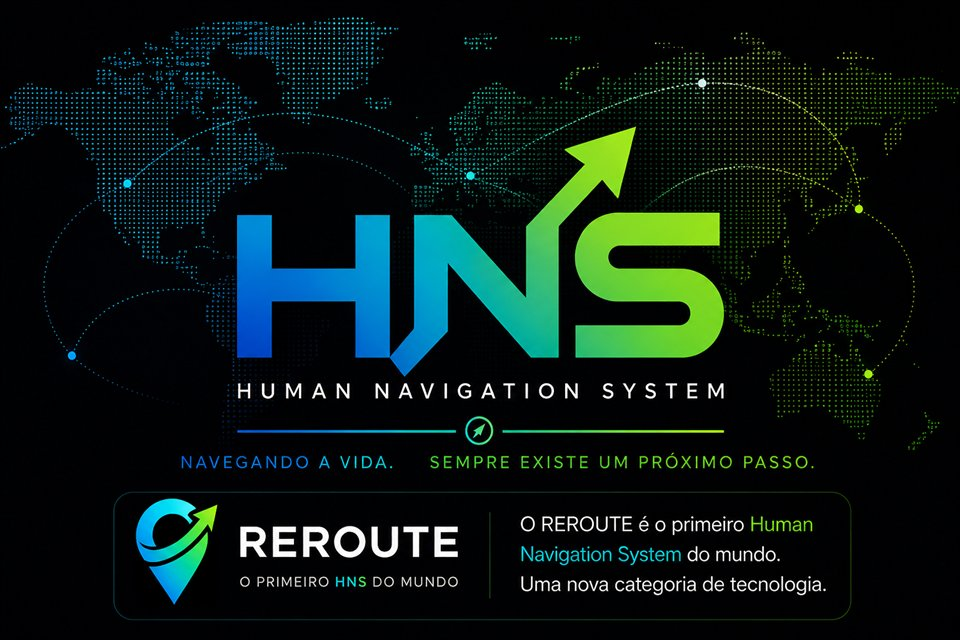

Você sente que perdeu a direção?
Mesmo trabalhando duro, parece que você não consegue avançar como gostaria.
O REROUTE é o primeiro Human Navigation System do mundo. Uma tecnologia criada para ajudar você a recuperar direção, adaptar-se às mudanças e descobrir o próximo passo quando a vida sair da rota.
Da primeira decisão ao seu próximo passo.
Conheça a experiência completa do aplicativo em poucos segundos.
Nem sempre falta esforço. Muitas vezes falta clareza sobre qual deve ser o próximo passo.
Mesmo trabalhando duro, parece que você não consegue avançar como gostaria.
Quando tudo parece importante, escolher o próximo passo pode ser a parte mais difícil.
Nova carreira, negócio, relacionamento ou fase da vida. Mudanças exigem novas rotas.
Decisões melhores hoje podem transformar completamente o seu futuro.
Você não precisa começar do zero. Precisa descobrir qual é o próximo passo.
Se você respondeu 'sim' para qualquer uma dessas perguntas, o REROUTE foi criado para ajudar você a recuperar direção e continuar avançando.
Você começou um método, baixou um aplicativo, comprou um curso ou criou novas metas. Por alguns dias funcionou. Até que a vida aconteceu.
O trabalho aperta, o cansaço chega, os problemas aparecem e aquilo que parecia simples começa a exigir uma força que você já não tem.
Você olha para o plano abandonado e pensa que faltou disciplina. Mas talvez o problema nunca tenha sido falta de vontade.
A maioria das soluções espera que você siga sozinho, mesmo quando sua rotina, energia e prioridades já não são as mesmas.
O REROUTE foi criado para um mundo onde nada permanece igual. Ele aprende com sua jornada, adapta-se à sua realidade e ajuda você a tomar a melhor decisão para o momento que está vivendo.
Sem performance, sem julgamento, sem precisar fingir que está tudo sob controle.
O sistema ajuda a separar o que aconteceu, o que pesa agora e o que realmente precisa de atenção.
Uma ação possível para hoje, proporcional à sua realidade e conectada ao destino que ainda importa.
Olhar para a realidade como ela está, sem negar o desvio e sem transformar isso em identidade.
Entender o que mudou, o que atrapalhou e o que ainda está sob seu controle.
Desenhar uma nova rota menor, mais clara e possível para o momento atual.
Dar o próximo passo. Não o passo perfeito. O passo que recoloca você em movimento.
GPS navega estradas. O Human Navigation System ajuda pessoas a navegar mudanças, dúvidas, desafios e objetivos quando a rota original deixa de fazer sentido.
Organiza horários, mas não entende por que você perdeu o ritmo quando a rotina mudou.
Organizam tarefas, mas muitas vezes continuam cobrando execução quando você precisa de direção.
Ensinam métodos, mas não caminham com você nos dias em que a vida interrompe o método.
Acompanha sua jornada e ajuda você a adaptar a rota quando a realidade muda.

Ele promete algo mais sólido: ajudar você a tomar decisões melhores ao longo da jornada. Porque grandes mudanças raramente acontecem em um único salto. Elas nascem de milhares de pequenas decisões mais claras.
Se o REROUTE puder ajudar você a encontrar essa resposta com mais clareza, por que não experimentar gratuitamente?
Seu acesso à lista de espera foi confirmado.
Acabamos de enviar um e-mail de confirmação para você.
Alguns provedores podem direcionar nossa mensagem para as pastas Spam, Lixo Eletrônico ou Promoções.
Assim que localizar o e-mail, marque-o como "Não é spam" ou "Confiável".
Remetente: contato@reroute.com.br
Isso garante que você receba:
Não foi possível carregar esta tela.
Tudo começa entendendo onde você quer chegar. O REROUTE transforma seu objetivo em um destino claro.
Use as setas do teclado para navegar.
Deslize para continuar